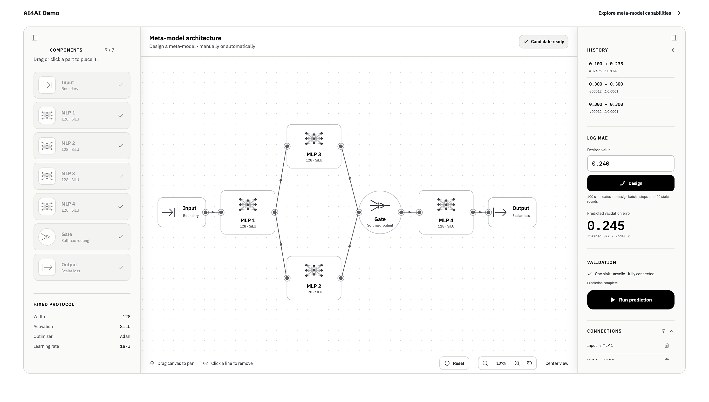

AI4AI: Learning to Design a Model
33 SOTA-level results across 9 OpenTS datasets. I designed a neural architecture search space rich in high-performing models, enabling straightforward random search and performance-guided mutation to discover strong architectures. The resulting models matched or exceeded published SOTA scores on 33 forecasting tasks, with up to 31.56% lower MSE. I also built the multi-GPU search and evaluation infrastructure that turns architecture design into a scalable experimental process.